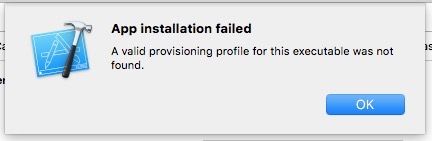

开发的路上坑多无比，稍有不慎，自个就埋了自己，好的心态，走的长远。最近尝试使用leancloud完成一个例子。通过pod方式集成，始终不能真机运行。

无奈，手动集成吧！不成想也不逃不过，直接1
2
3dyld: Library not loaded: @rpath/AVOSCloudCrashReporting.framework/AVOSCloudCrashReporting
Referenced from: /var/mobile/Containers/Bundle/Application/17D74CB4-B048-43BD-ACAA-0EF1F0928F34/loser.app/loser
Reason: image not found
这个问题倒是第一次见，赶紧的官方文档翻了一遍，没提这事，看来是我操作不当了，还是万能的stackoverflow。
解决方案1
Found the solution, in the target's General tab, there is an Embedded Binaries field, add framework there, and the crash is resolved.